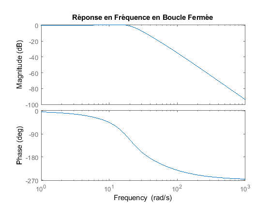
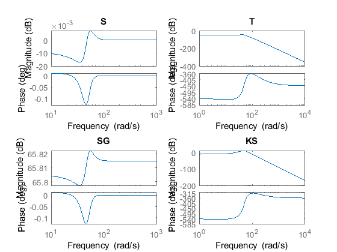

Contents
BE 6,7 et 8
PIFFER CHRISTO Guilherme
close all
clear
Definition des paramètres
m = 0.05; g = 9.81; L = 0.01; R = 1; K = 0.0001; ieq = 5; heq = 0.01; a1 = -R/L; a2 = -(2*ieq*K) / (m*heq); a3 = (K*ieq^2) / (heq^2*m); b1 = 1/L; e = 0.5; wn = 20; p1 = 50;
Definition des matrices du espace d'état
A = [a1 0 0; 0 0 1; a2 a3 0]; B = [b1; 0; 0]; C = [0 1 0];
Conférence de la commandabilité
Co = ctrb(A, B); rCo = rank(Co); if rCo == size(A, 1) disp('Commandable'); else disp('Pas commandable.'); end
Commandable
Découvrir F et G
poly1 = [1, p1]; poly2 = [1, 2*e*wn, wn^2]; result_poly = conv(poly1, poly2); rts = roots(result_poly); F = place(A,B,rts); G = inv(-C*inv(A-B*F)*B);
Réponse en fréquence en boucle fermée
sysbf=ss(A-B*F,[B*G],C,0); sysubf=ss(A-B*F,[B*G],-F,G); figure(1); bode(sysbf); title('Réponse en Fréquence en Boucle Fermée'); % Mesure de la fréquence de coupure [mag, phase, wout] = bode(sysbf); [~, index_wc] = min(abs(mag - 1/sqrt(2))); wc = wout(index_wc); disp(['Fréquence de Coupure (wc) : ', num2str(wc), ' rad/s']); % Vérification du temps de montée trise_spec = 2.3/wc; trise_info = stepinfo(sysbf); trise_actuel = trise_info.RiseTime; disp(['Temps de Montée Spécifié (trise) : ', num2str(trise_spec), ' s']); disp(['Temps de Montée Actuel (trise) : ', num2str(trise_actuel), ' s']); if trise_actuel <= trise_spec disp('Le temps de montée est conforme aux spécifications.'); else disp('Le temps de montée PAS conforme aux spécifications.'); end
Fréquence de Coupure (wc) : 23.1437 rad/s Temps de Montée Spécifié (trise) : 0.099379 s Temps de Montée Actuel (trise) : 0.09003 s Le temps de montée est conforme aux spécifications.
Observateur
L = place(A',C',rts)'; Ao = (A - L*C); Bo = [B L]; Co = eye(3); Do = zeros(3, 2); delta_v = 5;
Integrateur
Ae = [A zeros(3,1); -C 0]; Be = [B; 0]; Ce = [C 0]; wn = 25; e = 10/wn; poly3 = [1, 2.1*wn, 3.4*wn^2, 2.7*wn^3, wn^4]; r = roots(poly3); Fe = acker(Ae, Be, r); F = [Fe(1) Fe(2) Fe(3)]; G = [Fe(4)]; % % Ai = [A-L*C-B*F B*G; 0 0]; % B1 = [0 0 1]'; % B2 = [L(1)' -1]'; % Fi = [F -G]; s = tf('s'); Gs = C * inv(s * eye(size(A)) - A)*B; Kr_s = Gs - F * inv(s * eye(size(A)) - (A - B*F + L*C)) * B * Gs; Ky_s = F * inv(s * eye(size(A)) - (A - B*F + L*C)) * L; % Kr_s = -Fe * inv(s * eye(size(Ai)) - Ai)*B1 S = 1 / 1 + Gs*Ky_s*Kr_s; T = Gs*Ky_s*Kr_s / 1 + Gs*Ky_s*Kr_s; SG = S*G; KS = Ky_s*Kr_s*S; figure(2); subplot(2, 2, 1); bode(S); title('S'); subplot(2, 2, 2); bode(T); title('T'); subplot(2, 2, 3); bode(SG); title('SG'); subplot(2, 2, 4); bode(KS); title('KS');